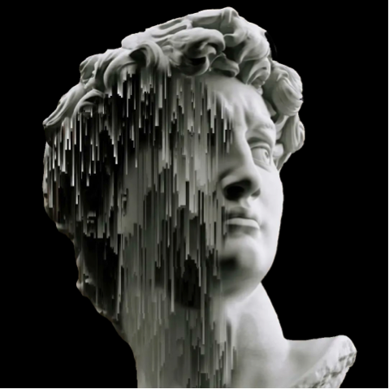
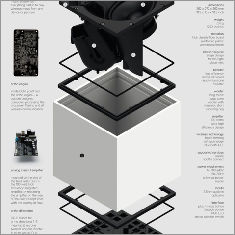
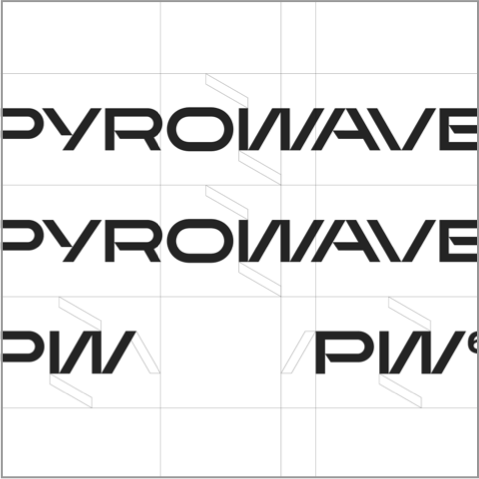
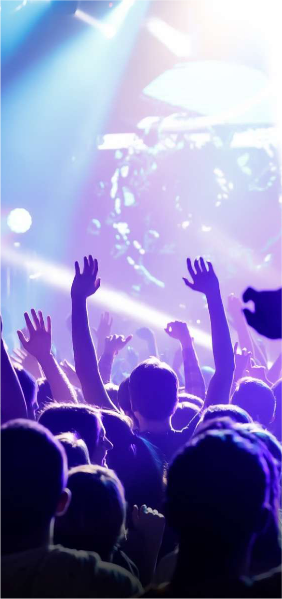
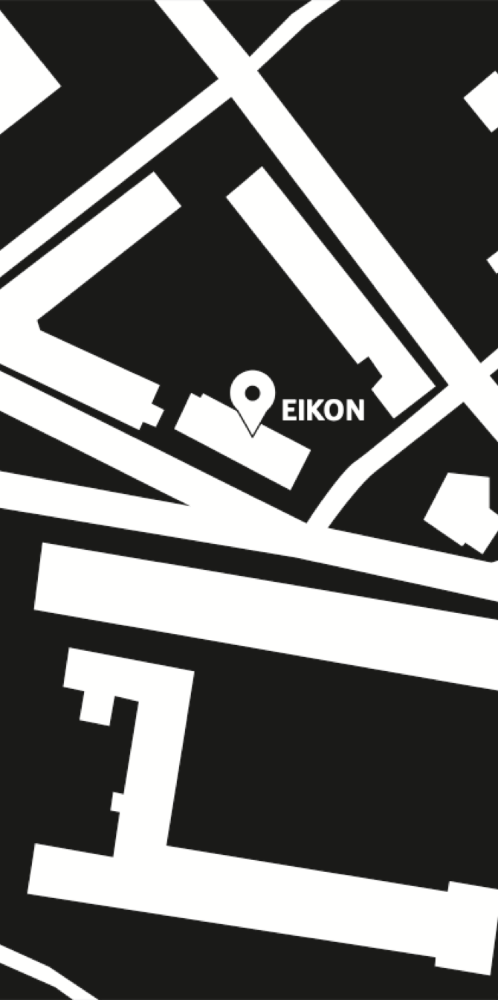

01
a propos
Le festival d'arts numériques eikonica de Fribourg est
l'événement à ne pas manquer pour tous les amateurs de nouvelles
technologies, d'art contemporain et tous les curieux. Du 13 au
15 octobre, venez explorer une grande variété d'oeuvres
numériques, allant de l'animation à la réalité virtuelle en
passant par les installations interactives. Vous pourrez
rencontrer des artistes locaux et internationaux, assister à des
conférences passionnantes et participer à des ateliers créatifs.
Deux concerts à fri-son permettront de prolonger les festivités.



02
programme
13 octobre
11h : Conférence inaugurale sur les tendances actuelles de
l'art numérique - studio Vidéo
14h : Atelier "Initiation à la réalité virtuelle" pour les retraités (sur inscription) - salle 102
16h : Atelier "Pixel Art" pour les enfants (7 à 12 ans, sur inscription) - salle 103
18h : Vernissage des expositions – Korridor
20h : Concert d'ouverture avec l’artiste fribourgeois Kinetic Flow – Fri-son
14 octobre
14h : Atelier "Initiation à la réalité virtuelle" pour les retraités (sur inscription) - salle 102
16h : Atelier "Pixel Art" pour les enfants (7 à 12 ans, sur inscription) - salle 103
18h : Vernissage des expositions – Korridor
20h : Concert d'ouverture avec l’artiste fribourgeois Kinetic Flow – Fri-son
11h : Conférence sur la place de l'art numérique dans les
industries créatives - studio Vidéo
14h : Atelier "Création d'un GIF animé" pour les enfants (sur inscription) - salle 103
16h : Atelier "Création d'une œuvre interactive" (sur inscription) - salle 102
18h : Projection en avant-première du film d'animation “Le rêve de Luna” - studio Vidéo
20h : Concert avec le groupe belge Neon Pulse – Fri-son
15 octobre
14h : Atelier "Création d'un GIF animé" pour les enfants (sur inscription) - salle 103
16h : Atelier "Création d'une œuvre interactive" (sur inscription) - salle 102
18h : Projection en avant-première du film d'animation “Le rêve de Luna” - studio Vidéo
20h : Concert avec le groupe belge Neon Pulse – Fri-son
11h : Conférence sur l'avenir de l'art numérique et ses
implications sociales – studio Vidéo
14h : Atelier "Fabrication de circuits électroniques" pour les retraités (sur inscription) - salle 103
16h : Atelier "Introduction à la programmation" pour les enfants (sur inscription) - salle 102
17h : Clôture du festival avec performance artistique de l’artiste Min-Jae Park – salle 403
14h : Atelier "Fabrication de circuits électroniques" pour les retraités (sur inscription) - salle 103
16h : Atelier "Introduction à la programmation" pour les enfants (sur inscription) - salle 102
17h : Clôture du festival avec performance artistique de l’artiste Min-Jae Park – salle 403
03
exposition
Tout au long du festival, les visiteurs pourront découvrir les
expositions d'oeuvres d'art numériques, expérimenter des
installations interactives et participer à des discussions
informelles avec les artistes et les professionnels du milieu.

04
evenement



tickets & reservations
En raison du nombre limité de place,
il vous est conseillé de réserver votre évenement.
il vous est conseillé de réserver votre évenement.
05
infos

-
transports, conférences, workshop
Route Wilhelm Kaiser 13, 1700 Fribourg -
concert
Route de la Fonderie 13, 1700 Fribourg -
transports
bus: 1,3,7,8,9 (arrêt charmettes)